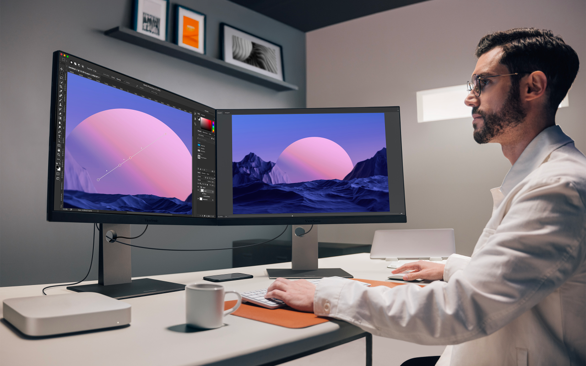

Diferencias entre tipos de pantallas: OLED, AMOLED, IPS, TN y más
¿Cuál es mejor? ¿Cuál te conviene según el uso? Exploramos las principales tecnologías de pantalla que existen hoy.
En un mundo cada vez más digital, elegir una buena pantalla puede marcar la diferencia, ya sea para jugar, editar, trabajar o simplemente mirar series. Conocer los diferentes tipos puede ayudarte a tomar decisiones más informadas.
Principales tecnologías de paneles
- TN (Twisted Nematic): Son rápidos y baratos, ideales para gaming competitivo. Pero tienen ángulos de visión y reproducción de color limitados.
- IPS (In-Plane Switching): Mejor reproducción de colores y ángulos de visión. Son comunes en monitores para diseño o contenido multimedia.
- VA (Vertical Alignment): Tienen buen contraste, mejores negros que los IPS, pero suelen ser más lentos en respuesta.
- Nano IPS: Variante premium de IPS con mejor gamut de color y frecuencias más altas, ideal para gaming profesional y edición.
- OLED (Organic Light-Emitting Diode): Cada píxel se ilumina por separado. Negros perfectos y colores vibrantes, pero más caros y con riesgo de burn-in.
- AMOLED: Variante de OLED usada sobre todo en móviles. Más delgada y eficiente, aunque con las mismas ventajas y desventajas.
Comparativa general
Si no sabés qué elegir, este pequeño resumen puede ayudar:
- Gaming competitivo: TN o IPS con alta tasa de refresco.
- Edición de fotos/video: IPS o Nano IPS por fidelidad de color.
- Uso multimedia: VA o OLED para mejor contraste.
- Móviles premium: AMOLED.
Ventajas y desventajas
- OLED: ✅ Negros puros – ❌ Riesgo de burn-in.
- IPS: ✅ Colores reales – ❌ Contraste medio.
- VA: ✅ Buen contraste – ❌ Ángulos pobres.
- TN: ✅ Bajo input lag – ❌ Colores lavados.
Conclusión
No existe la pantalla perfecta. Todo depende de para qué la necesitás. Si conocés tus prioridades (velocidad, calidad visual, consumo, etc.), elegir el panel correcto se vuelve mucho más fácil.